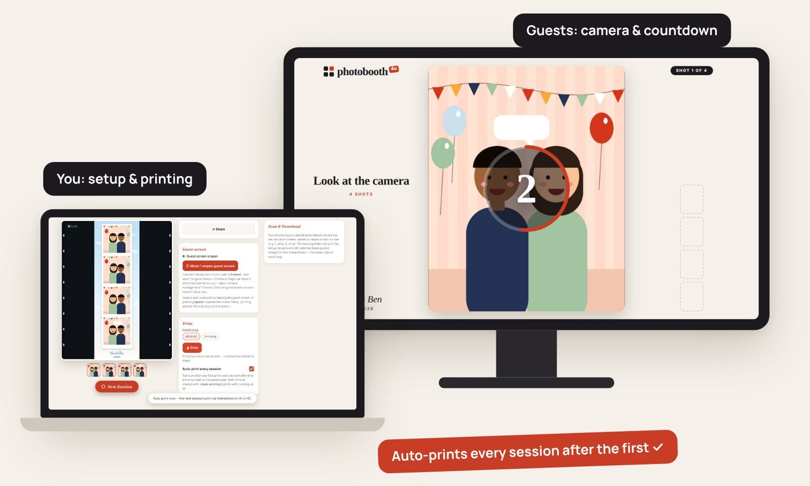
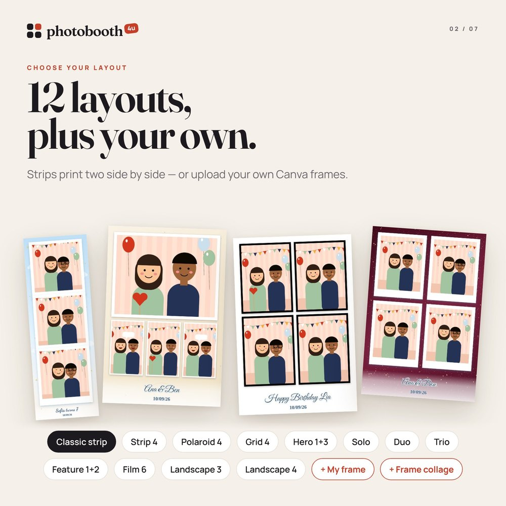
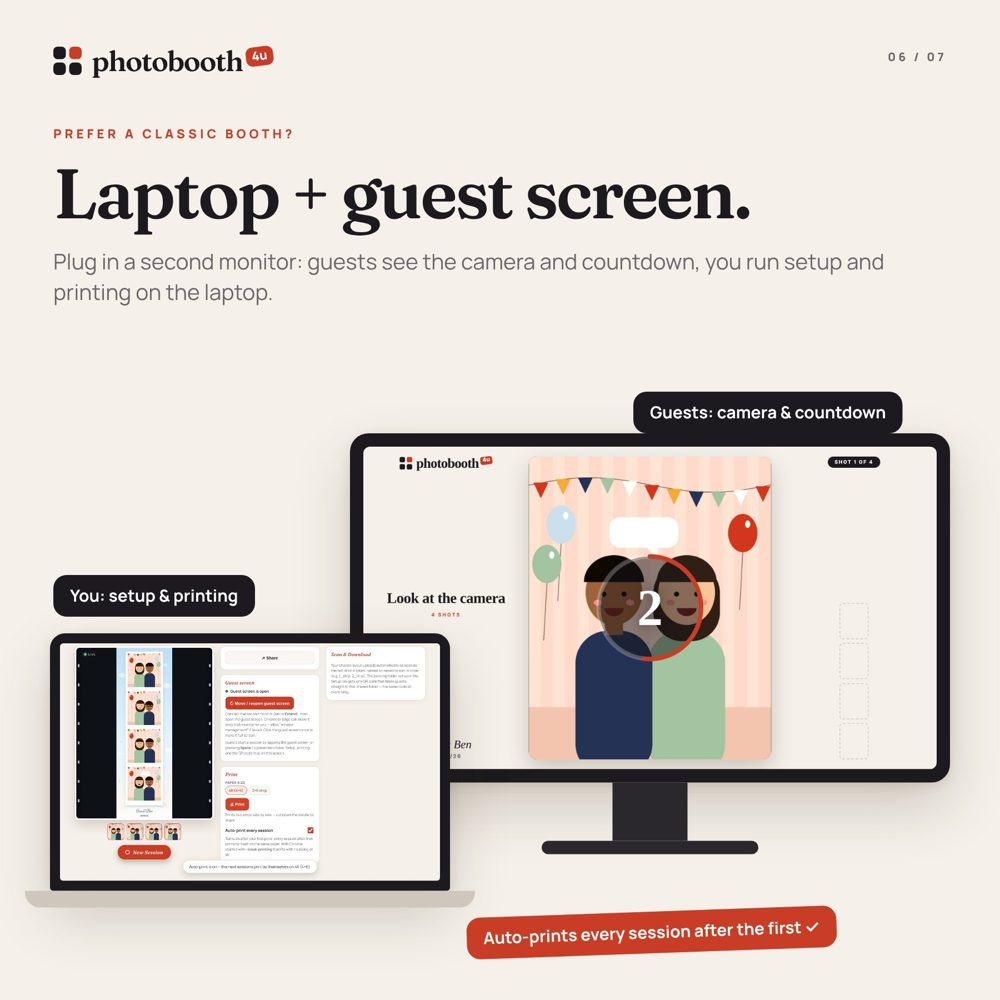

Everything you need to run photobooth4u. In a hurry? Page 2 is a one-page quick start for event day. The rest explains each part step by step.

★ Event day
Do these in order. Each step has its own page if you need more detail.
Laptop on its charger. Guest screen by HDMI, set to Extend. Camera on a full battery (or dummy battery), lens cap off. Printer on, paper and ribbon loaded.
Canon: camera Menu → Choose USB connection app → Photo Import / Remote Control, and turn the camera's Wi-Fi / Bluetooth off. Nikon: nothing to set. Then connect the USB cable to the laptop. (Page 6)
Start Chrome with the silent-printing shortcut (page 5) and open photobooth4u.netlify.app.
Setup → 5 Share & start → Camera → DSLR / mirrorless over USB (remote control). Chrome shows a list: pick your camera → Connect. The live view appears.
Design, name and date, layout, frame, and the event name in step 5 Share. It's saved from last time, so usually you only change the name.
In Photo Session tap 🖨 Print settings (bottom right), pick each paper size and choose its printer from the list. Two printers or HiTi strips: open the Print Helper first (page 8).
Take a session yourself. Check the photo, the QR code and the print. Then tick Auto-print every session if you want it.
In Setup → 5, tap Open guest screen, click it once for full screen. You're ready. Guests tap the screen or press the clicker to start.
01 · Before you start
02 · First time on each device
Go to photobooth4u.netlify.app in Chrome, Edge or Safari.
Type your PB-XXXX-XXXX-XXXX code and tap Unlock. Lifetime codes open your My Events page first, so tap Open photo booth from there.
It stays unlocked, so next time just open the website. Each new device uses one of your device slots. To replace a device (new laptop, lost tablet), message us and we'll free its slot.
03 · Every event
In the booth, open Setup and go through the 5 steps with Next. The bar at the bottom shows what's still needed and has Start photo session.
Under Ready designs, tap a template to see it big, then Use this design. Colours & background changes the background, gold details colour or adds your own photo. ★ Save my design keeps yours for next time.
Type the name on the photo and tap the calendar icon to add the date. Pick a title style, then a font: the cards show your own name. Pairs set the name and small-line fonts together.
Pick one of the layouts (each card shows your design) and the countdown. Optional: guests choose the layout each session.
All optional, in tabs. Frame: upload your Canva frame with the photo spots left white or see-through. It becomes My frame, and two or more make a Frame collage on one 4R print. A frame with two strips side by side? Tick Same photos on both strips so guests take 3 photos, not 6. Logo, Stickers, and Filter (B&W, Sepia, Warm, Cool, soft skin).
Lifetime codes: type the event name for a new folder. Rental codes connect by themselves. The All photos QR is here to print or share ahead. On a laptop, choose a backup folder here too (page 9).

Your setup saves automatically. It comes back after a refresh or restart, and every device on your code gets the same design. Lifetime codes keep a separate design for each event name. ⋯ → Reset setup starts fresh.
Type the exact same event name on every device at that event. They share one folder, one QR code and one design. Each device's photos end in its number (…_cam1.jpg, …_cam2.jpg).
04 · Pro booth
Guests see the camera, countdown and their photos on the big screen. You run setup, printing and the QR code on the laptop.
Plug in the monitor or TV. Set the display to Extend, not Duplicate. Windows: press Win + P → Extend. Mac: System Settings → Displays → turn off mirroring.
Use the shortcut below so prints go straight to the printer without a pop-up. Close every Chrome window first.
In Setup → 5 Share & start, tap Open guest screen. Allow pop-ups and "window management" if Chrome asks. It moves to the second screen. Click it once to go full screen.
Guests tap the guest screen, or press Space / Enter or a presenter clicker.

Windows: right-click the desktop → New → Shortcut, and paste this as the location:
Mac: open Terminal and run:
--kiosk for the Pro Booth. It forces a single full-screen window and blocks the guest screen. Edge works the same way with msedge.exe.05 · Pro booth camera
USB remote control is the best way: the booth presses the real shutter, so your camera settings, focus and flash all work. Works on a Mac in Chrome or Edge (Canon, Nikon, Sony, Fujifilm and most others).
Canon: Menu → Choose USB connection app → Photo Import / Remote Control (not "Video calls / streaming"). Turn off Wi-Fi / Bluetooth. Nikon / others: nothing to set. Save photos as JPEG (or RAW + JPEG), and turn off auto power off.
Use the camera's USB cable straight into the laptop. Quit Photos, Image Capture and EOS Utility if they open. In the booth: Setup → 5 Share & start → Camera → DSLR / mirrorless over USB → pick the camera → Connect.
Choose the mode, exposure, white balance and flash on the camera, like a normal shoot. The booth uses them for every photo. Use continuous / face AF.
Mirror (Camera section, or the button on the Get ready screen) flips the preview. The final photo looks exactly like the preview: mirrored when it's on, not mirrored when it's off.
06 · Showtime
What guests see, step by step. You can stay hands-off: everything works with taps on the guest screen or a clicker.
The guest taps Start (or the welcome screen). If you allowed it, they choose a layout.
The live view shows how many photos and the time between them. Guests can pick a filter and Mirror here. Tap Start on the picture (or Space) when ready.
Each photo shows for the pause you set, so guests can check it. Space skips the wait. The photos appear one by one at the side.
Not happy with one? Tap that photo on the side, then Retake. Happy? Tap Done (or Space). Cancel or Esc stops the session; nothing is saved.
The final print shows with its QR code. It uploads, saves a copy and prints (if Auto-print is on). Next guest clears the screen.
During the event
Follow the countdown and pose. Scan the Your photo QR to open the photo in the online gallery.
Each session uploads to the event's online gallery, and a copy saves on the laptop: Downloads, or your backup folder.
Print the All photos QR from Setup → Share and put it near the booth. Guests can scan it any time.
07 · If your package includes printing
One printer, one size? Do steps 1, 2 and 5. Two printers, or 4R photos and 2×6 strips on the same HiTi? Do all five.
Install its driver and print one test page. In the printer's own preferences set the paper size (e.g. 6×4) and borderless. The booth prints with these settings.
Strips print two side by side on one 4R sheet. Add the same HiTi again (Mac: System Settings → Printers → +; Windows: Printers → Add) and name it e.g. HiTi 2x6 cut. Give that copy the driver's 2-inch cut paper option, so the printer cuts the sheet into two strips. Name the first copy HiTi 4x6.
Download it from photobooth4u.netlify.app/downloads/, unzip and open it (Mac: right-click → Open the first time; Windows: More info → Run anyway). Leave its window open during the event.
In Photo Session tap 🖨 Print settings (bottom right) and switch on Print Helper on this computer (click Allow if Chrome asks). Tap each paper size and choose its printer from the list under Printer for …. Strip layouts use the 2 strips, cut printer by themselves. The booth remembers your choices.
Print one session of each size. Then tick Auto-print every session: each print goes straight to the right printer with no pop-up.
08 · Pro booth backup
In Setup → 5 Share, tap Choose backup folder and pick one, e.g. Pictures › photobooth4u. Every photo is saved there in a subfolder named after the event. Chrome or Edge on a computer.
After Chrome restarts, tap Allow saving (in Setup or the Photo Session panel), then allow Chrome to edit files.
The Photo Session panel shows Backup folder: Saving to … ✓. Without one, each photo goes to Downloads.
The booth tries again, then keeps the photo on the device. The panel shows Waiting to upload, and the photos upload by themselves when the internet is back. Guests get the All photos QR meanwhile. Keep the booth open until the list is empty.
Before guests arrive
09 · After the event
Go to photobooth4u.netlify.app/lifetime/ on any phone or computer and sign in with your code. Every event is listed, newest first.
Use Copy link to send the online gallery by Messenger, or Show QR to let your client scan it. Drive folder opens the same photos in Google Drive for downloading them all.
Photos are deleted 7 days after the event's last photo. Each event shows its "Download by" date.
Send the link the same day, and tell your client to save their favourites within the week. After deletion the link stops working.
10 · Quick fixes
| Problem | Fix |
|---|---|
| "We need access to your camera" | Allow camera access in the browser (the icon in the address bar), then tap Try Again. Close other apps using the camera. |
| "Camera disconnected. Reconnecting…" | Check the camera is on and its USB cable is in. The booth carries on by itself. |
| USB camera not in Chrome's list | Canon: set Photo Import / Remote Control and turn off Wi-Fi. Quit Photos / Image Capture / EOS Utility, replug the cable, reload. |
| "The camera photo didn't come through" | The camera couldn't focus, or saves RAW only. Set JPEG and check focus. The live view picture was used instead. |
| "Print Helper not found" | Open the Print Helper app and keep its window open. Allow access if Chrome asks. |
| "Photos waiting to upload" | The internet dropped. They upload by themselves, or tap Retry now / Save to this computer. |
| "Already used on another device" | All your device slots are taken. Message us to free one. |
| The QR code doesn't appear | Check the internet, and make sure the event name is typed in Setup → 5 Share. |
| A print dialog pops up every time | Use the Print Helper (page 8), or start Chrome with the silent-printing shortcut (page 5). |
| Guest screen is on the wrong monitor | Check the display is set to Extend, then tap Move / reopen guest screen. |
We're on Facebook Messenger: m.me/roktetnachi